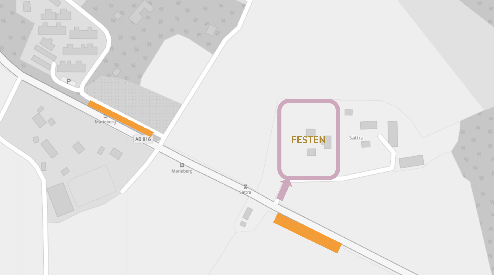

C & F
AUG 7
—
2021
SÄTTRA GÅRD, MUNSÖ

AUG 7
—
2021
SÄTTRA GÅRD, MUNSÖ
Vad kul att ni fått vår inbjudan, och att ni hittat hit till denna sida!
Vi ser så mycket fram emot att få fira vårt bröllop med er.

SÄTTRA GÅRD, MUNSÖ

Vi vill bara börja med att adressera ändringen av plats. Som ni märkt har vi på grund av rådande omständigheter behövt tänka om när det gäller plats för vår bröllopsfest. Eftersom vi hoppas att restriktionerna är mindre snäva för privata tillställningar än för verksamheter har vi valt att byta plats till Carolines föräldrars gård på Ekerö i Stockholm. Vi ber om ursäkt ifall det stökar till sommarplanerna, men hoppas ändå att få se just dig där!
Med andra ord hoppas vi verkligen att denna tillställning blir av! Vi kommer att vara utomhus hela dagen, och brudparet kommer hoppeligen även vara vaccinerade och redo för pussar och kramar 🤗
Skulle vi dock av uppenbara skäl vara tvugna att ställa in, kommer vi att höra av oss till alla er som OSAt ja samt uppdatera denna hemsida.
Vi kommer att börja eftermiddagen med bubbel och mingel, tätt följt av en lovordsceremoni. Därefter lär vi känna varandra genom lekar och quiz, innan vi sätter oss ner i det stora partytältet på ängen och äter en god middag tillsammans. Sen blir det dans till en rad olika DJs, häng i baren eller deep-talk i något av de olika sittgrupperna 🤝
Tyvärr finns det inte mycket att erbjuda på landet kring hotell, så vad det gäller boende/transport kommer vi att rekommendera två olika alternativ:
Ifall ni kommer med egen bil, rekommenderar vi samåkning i största möjliga mån. Ta gärna med er fler (bjudna 😉) gäster ifall ni kan 😊
Bilar parkeras med fördel på platserna angivna på bilden nedan. Om dessa platser är upptagna, kan ni köra in på gården och invänta parkeringsansvarig.
Det ena området är en parkeringsficka längs med Ekerövägen. Det andra området ligger på en parallelgata som heter Söderbacksvägen. Vi hade varit tacksamma ifall ni inte parkerar efter skylten för BRF Söderbacken.
För de som anmält busstransport, kommer denna avgå ifrån Cityterminalen bussterminalen klockan 12:00. Gate kommer att anslås på dagen. Ansvarig busskontakt är Louise Nehler. Ifall ni vill nå henne gör ni det på 0706416538. Bussen avgår åter till samma plats 01:00, framme ca 02:00.
För er som har anmält boende i tält, önskar vi att ni tar med er liggunderlag och sovsäck. Toalett och duschmöjligheter finns i husen.
Längre ner på Ekerö finns en del AirBnB, men eftersom det är en bit bort och man kanske inte alltid vill köra själv så rekommenderar vi att förboka taxi de tider/sträckor som ni önskar mellan era boenden och gården.
Våra toastmasters för kvällen kommer att vara Malin Ekman och Pontus Lundmark. Ifall ni vill framföra något kort tal eller jyckel, hör av dig till dem via mulderwitasp2021@gmail.com 🤗
Er närvaro är den bästa presenten! Vi äger redan mer fysiska prylar än vad vi borde, så fysiska ting undanbedes tacksamt. Vill man bidra till en framtida bröllopsresa så kan man swisha Jeanette Vitasp på 0706184882 😌
För er som inte vet, så kommer vi att viga oss med närmsta familjen tidigare under sommaren. Därför kommer denna ceremoni vara symbolisk och lite kortare - med andra ord kommer dagen ha mer fokus på fest 🥳
Sommarfin! Vi vill dock uppmärksamma er på att vi kommer att vara på en gård! Det kommer att vara gräs och grus, så välj ett par skor ni kan känna er bekväma i. Eftersom vi kommer vara ute hela dagen och natten är det bra med kläder efter väder; t.ex. en varm tröja till kvällen, eller lämpliga kläder ifall det (gud förbjude) skulle regna på dagen.
När det gäller oss-datum har vi valt att förlänga det till 20e juni. Osa kan du göra genom att fylla i detta formulär eller genomt att maila till oss på felix.mulder@gmail.com.
Väl mött!
Hälsningar, Caroline & Felix